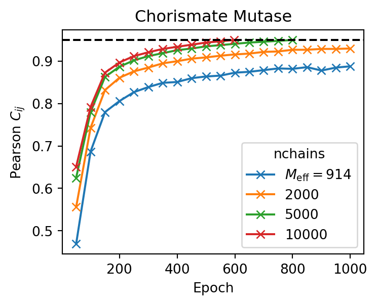

Training
⚙️ Training
All adabmDCA implementations (Python, Julia, C++) provide a unified command-line interface. Training is performed using the command:
adabmDCA train -m <model> -d <fasta_file> -o <output_folder> -l <label>
Where:
-m <model>: Type of model to train. Choose from:bmDCA: Fully-connected Boltzmann Machine (default)eaDCA: Sparse model with progressively activated couplingsedDCA: Sparse model obtained by decimating an existingbmDCAmodel
-d <fasta_file>: Path to the input MSA in FASTA format-o <output_folder>: Output directory for storing results-l <label>: Optional label prefix for output files
Info
All options are listed in Script arguments. The same information can be shown from the command line using:
adabmDCA train -h
Training proceeds until the Pearson correlation coefficient between the model and empirical two-point statistics reaches a target threshold (default: --target 0.95).
📦 Output Files
By default, the following files are generated during training (overwritten every 50 epochs):
-
<label>_params.dat: Model parameters.- Lines starting with
Jencode pairwise couplings: position1, position2, symbol1, symbol2 - Lines starting with
hencode single-site biases: position, symbol - Inactive couplings (i.e. value 0) are not saved
- Lines starting with
-
<label>_chains.fasta: Final state of Markov chains used during sampling -
<label>_adabmDCA.log: Log file recording training progress
♻️ Restart from a Checkpoint
To resume an interrupted training, provide saved parameters and chains:
adabmDCA train [...] -p <file_params> -c <file_chains>
This initializes the model and chains from previously saved states.
⚖️ Sequence Weights
You can provide precomputed importance weights via:
-w <weights_file>
Otherwise, weights are computed automatically using sequence identity clustering and saved to:
<output_folder>/<label>_weights.dat
Use --clustering_seqid to control the sequence identity threshold, or --no_reweighting to disable reweighting.
🔠 Alphabet Specification
By default, the alphabet is set to protein. To specify others:
--alphabet rna
--alphabet dna
You can also define a custom alphabet:
--alphabet ABCD-
Just ensure the symbols match exactly with those in your MSA. Custom alphabets allow for specialized tokens or reordering.
🧠 Training Algorithms
🧩 bmDCA: Fully Connected Model
This is the default training mode, where all possible pairwise couplings are learned.
🌱 eaDCA: Progressive Coupling Activation
This routine learns a sparse DCA model by gradually activating couplings.
Use:
adabmDCA train -m eaDCA [...]
Key hyperparameters:
--factivate <float>: Fraction of inactive couplings activated per iteration (default:0.001)--gsteps <int>: Number of parameter updates per fixed coupling graph (default:10)--nsweeps <int>: MC sweeps per parameter update. Since only part of the model changes at each step, a smaller value (e.g.5) is usually sufficient.
✂️ edDCA: Decimation for Sparsity
This routine builds a sparse model by pruning the least informative couplings from a bmDCA model.
Two modes are available:
1. From Pretrained Model
adabmDCA train -m edDCA -d <fasta_file> -p <file_params> -c <file_chains>
- Requires parameters and chains from a previously trained
bmDCAmodel - Applies decimation until target sparsity is reached (up to 10,000 iterations)
2. Train + Decimate (No Input Model)
If -p and -c are omitted, the model is initialized from scratch. A bmDCA is trained first, then decimated automatically.
Key hyperparameters:
--gsteps <int>: Parameter updates per decimation step (default:10)--drate <float>: Fraction of couplings to remove per step (default:0.01)--density <float>: Target graph density (default:0.02)--target <float>: Target Pearson correlation (default:0.95)
🔧 Hyperparameter Tuning
Default values offer a good trade-off between performance and training time for clean MSAs. In other cases, consider adjusting the following:
🚀 Learning Rate (--lr)
- Default:
0.05 - Reduce to
0.01or0.005if the training is unstable, does not converge, or yields poor generative models
🔗 Number of Markov Chains (--nchains)
- Default:
10000 - Lowering this reduces memory use, but may slow convergence (see Fig. 2)
Figure 2: Evolution of the Pearson correlation coefficient for trainings with a different number of Markov chains. The target pearson is set to 0.95 (black dashed line).

🔄 Monte Carlo Sweeps (--nsweeps)
- Default:
10 - Controls the number of full sequence updates between parameter updates
- Higher values (up to
50) improve chain decorrelation but increase runtime
🧮 Pseudocount Regularization (--pseudocount)
- Default: \(\alpha = 1 / M_{\mathrm{eff}}\) (effective number of sequences)
- Adjust to control the smoothness of empirical frequency estimates
- \(\alpha = 0\): No regularization
- \(\alpha = 1\): Flat prior (uniform frequencies)
- Set manually via
--pseudocount <value>
Tip
Choosing optimal hyperparameters depends on your dataset. MSAs with many gaps, high diversity, or strong subfamily structure may require more conservative settings to ensure convergence and good sampling.